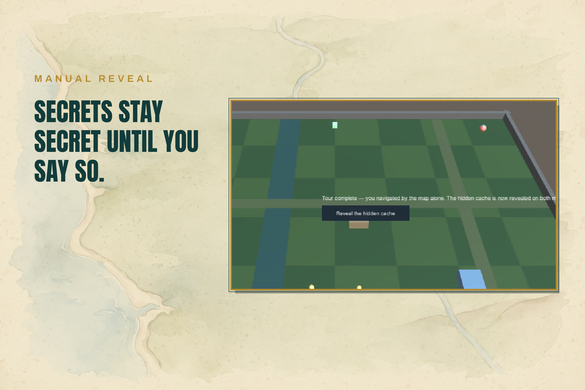

Markers and Categories
A marker is a MapMarker component on a world object. It registers itself with the shared registry on enable and unregisters on disable or destroy — you never add or remove icons by hand.

The marker fields
| Field | Meaning |
|---|---|
CategoryId | Which category draws it. |
Label | Shown on the world map when the marker is selected. |
VisibilityRule | Always, WhenExplored, WhenVisible, or Manual. |
RevealsFog + RevealRadius | This marker lifts fog around itself (the player). |
TrackHeading | The icon rotates with the object's facing. |
Visibility rules
| Rule | Shown when |
|---|---|
| Always | Always. The player marker's rule. |
| When Explored | Its fog cell has been explored at least once. Places, objectives. |
| When Visible | Its fog cell is inside a revealer's radius right now. Creatures. |
| Manual | Hidden until your code calls Reveal() on it. Secrets. |
The evaluation is shared by both views: a marker failing its rule is hidden on the minimap and the world map identically. With fog off in the settings, fog-based rules read visible.
Categories
Categories live in the settings asset and decide how a marker looks and where it appears:
- Icon sprite and Tint color.
- Show on Minimap / Show on World Map — per-view visibility, separate from the fog rules.
- Icon Scale — per-category size (the starter Objective category is 1.25, Player 1.2).
The five starter categories:
| Id | Name | Used for |
|---|---|---|
player | Player | The followed character (rule Always, reveals fog). |
npc | Character | Wandering creatures (rule When Visible). |
poi | Point of Interest | Places (rule When Explored). |
objective | Objective | The tracked goal (quest hooks, Quest Hooks). |
default | Marker | The fallback. An unknown category id resolves here — never null, never an exception in play. |
Edit categories in the settings asset (the window's Categories section opens it in the Inspector). Discovery — the first fog tick that explores a gated marker's cell — raises the MarkerDiscovered event exactly once per marker; see Quest Hooks.